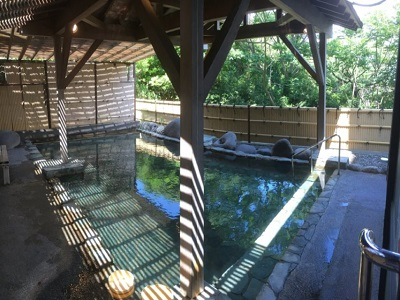

| 単純温泉 | 鉱物分・ガス分の含有量が少ない温泉（温泉1kg中に1g未満）。刺激が少なく肌にやさしい。無色透明で無味無臭。 |
|
|---|---|---|
| 塩化物泉 | 温泉水1kg中の含有成分が1g以上あり、陰イオンの主成分が塩素イオンの温泉。 |
|
| 炭酸水素塩泉 | アルカリ性の湯。重曹泉、重炭酸土類泉に分類される。 |
|
| 硫酸塩泉 | 硫酸塩が含まれる。苦味のある味。芒硝泉、石膏泉、正苦味泉に分かれる。 |
|
| 二酸化炭素泉 |  | 温泉水1kg中に遊離炭酸1g以上を含む温泉。 |
| 含鉄泉 | 温泉水1kg中に総鉄イオンを20mg以上含む温泉。水中の鉄分が空気に触れて酸化されるため、茶褐色を呈する。 |
|
| 硫黄泉 | 温泉水1kg中に総硫黄を2mg以上含む温泉。白濁して卵の腐ったような臭いがある。 |
|
| 酸性泉 | 多量の水素イオンを含有する温泉。多くの場合、遊離した硫酸・塩酸などの形で含まれる。刺激が強く、殺菌効果が高い。 |
|
| 人口温泉 | 天然温泉のように天然鉱物由来のミネラルに起因する薬効があり、表示や掲示が可能なもの。 |
温泉は生きている！
社会人になってから温泉が大好きになりました。非日常な景色の中で暖かい温泉につかると思わず「ふぅ～いい湯だなぁ」と独り言を呟くこともしばしば。匂いや色・景色や四季を感じながら入れる温泉は日本人の特権です。 現代は癒しの意味が大きい温泉ですが、古くは医療の代わりや療養のために「湯治」として親しまれていた歴史ある温泉宿では、今も店主によって温泉の歴史が語り継がれています。四万温泉の某有名湯宿の店主の一言 「温泉は生きている」を聞いてから、各地の温泉に入る度、お湯の声が聞こえる気がします。※サンプル画面のため、以下写真と記載している温泉タイプに関連はございません。